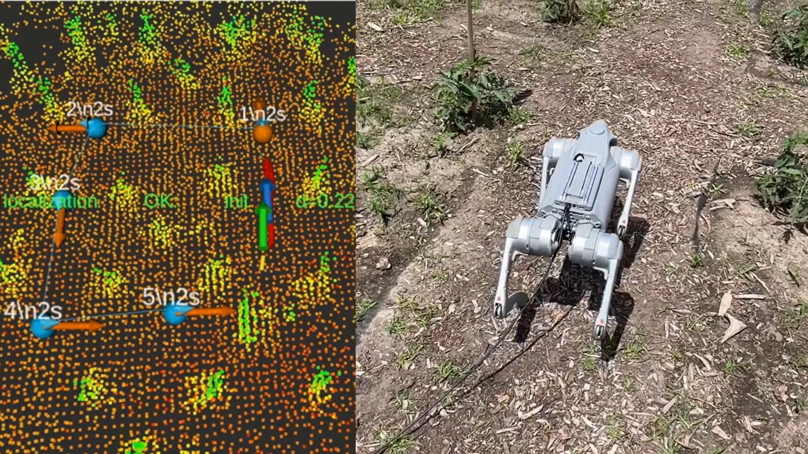
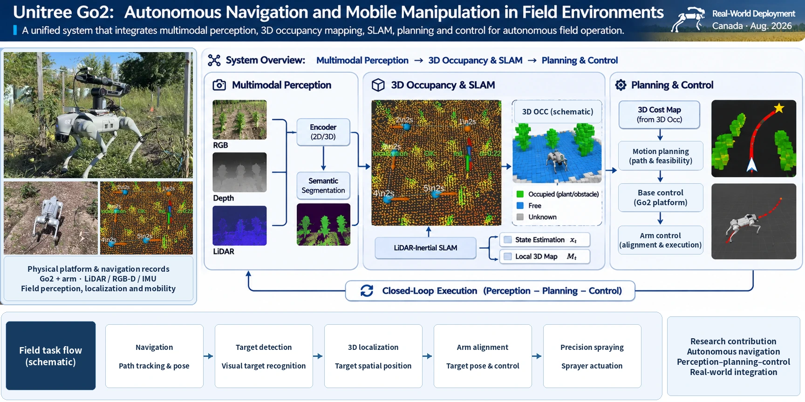

At McGill University, I led autonomous navigation development for a Unitree Go2 quadruped integrated with a robotic arm and precision-spraying end effector.
Multisensor state estimation and navigation
I integrated LiDAR/IMU state estimation and visual sensing into a ROS navigation pipeline, connecting environmental representation and localization to path planning and base-level velocity commands. A 3D occupancy representation supports reasoning about free, occupied and unknown space in unstructured field environments.
Target localization and manipulation
Visual weed detection and 3D target localization are connected to base navigation and manipulator interfaces. The task sequence coordinates target approach, arm alignment and spray actuation. My work includes navigation development, perception–planning–control integration, recorded-data replay and system debugging.
Field demonstration
On 5 August 2026, the integrated system completed a live autonomous field demonstration at an ASABE event in Canada, covering navigation, weed localization, arm execution and precision spraying in an outdoor wheat field.
